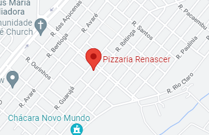

Super Pizza
Super Pizza
Redes Sociais


Sabores


Calabresa
Portuguesa
Marguerita
Frango com Catupiry
Muçarela
Napolitana
Brigadeiro
Romeu e Julieta
Creme de avalã com frutas
Califórnia
Historia da Pizza
A história da pizza tem início há pelo menos seis mil anos atrás, provavelmente entre os egípcios e os hebreus. Ela
não era, é claro, como é conhecida hoje, mas apenas um delgado estrato de massa – farinha mesclada com água -,
chamado na época de ‘pão de Abrahão’, semelhante ao moderno pão sírio; era também conhecido como ‘piscea’, termo que
futuramente derivaria para pizza. Outros estudiosos afirmam que ela era consumida pelos gregos, os quais produziam
suas massas com farinha de trigo, arroz ou grão de bico, assando-as depois em tijolos ardentes.
Continue lendo em : Clique Aqui
Contato
Av. Campos do Jordão, 482 - Parque Novo Mundo,
Americana - SP, 13467-610
Telefone: (19) 3406-7011
